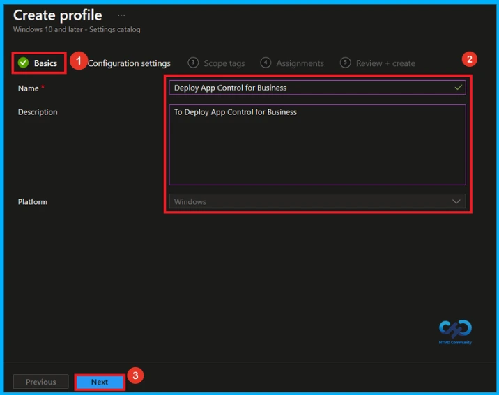
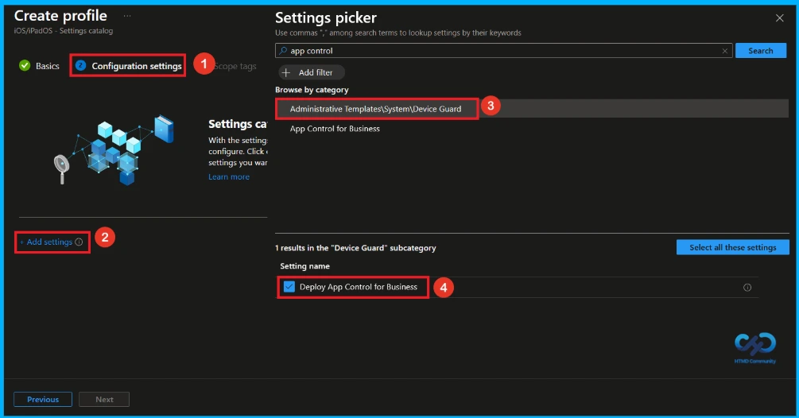
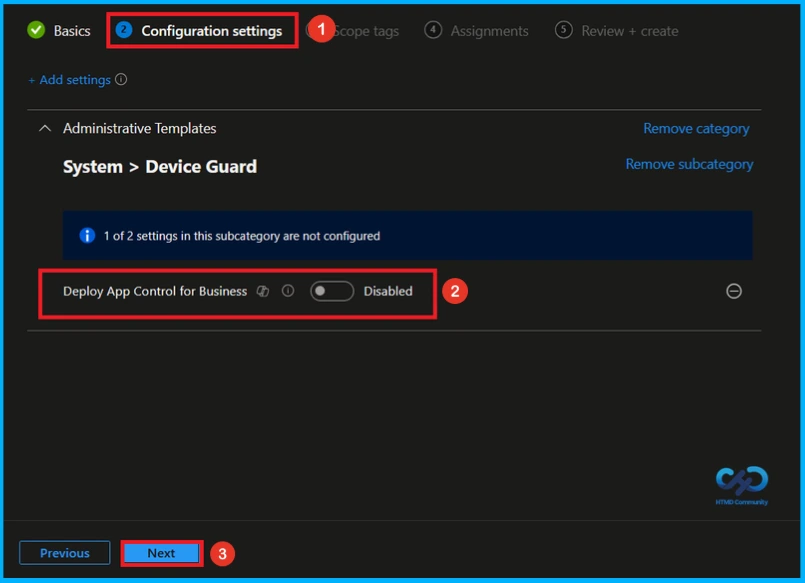
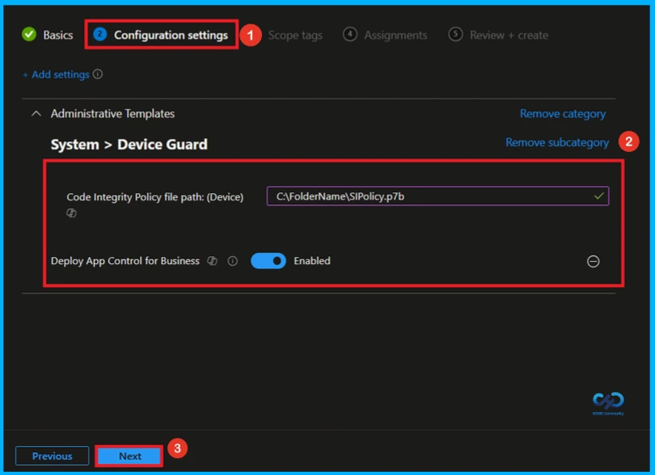
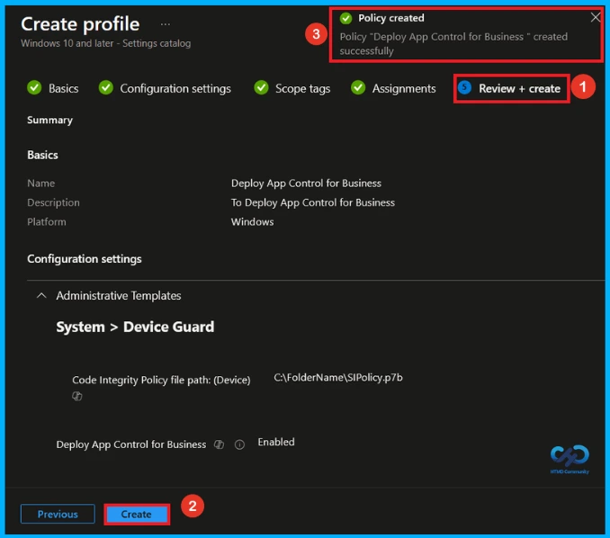
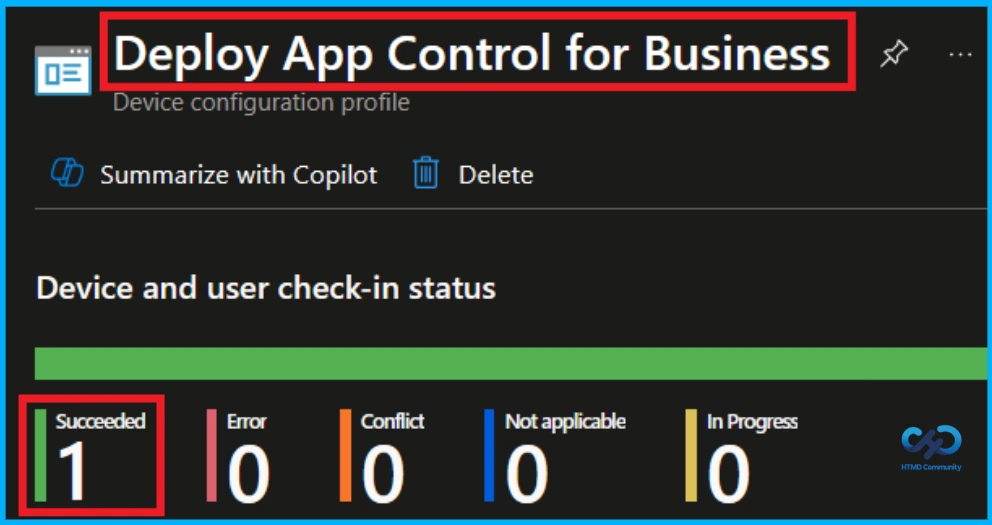
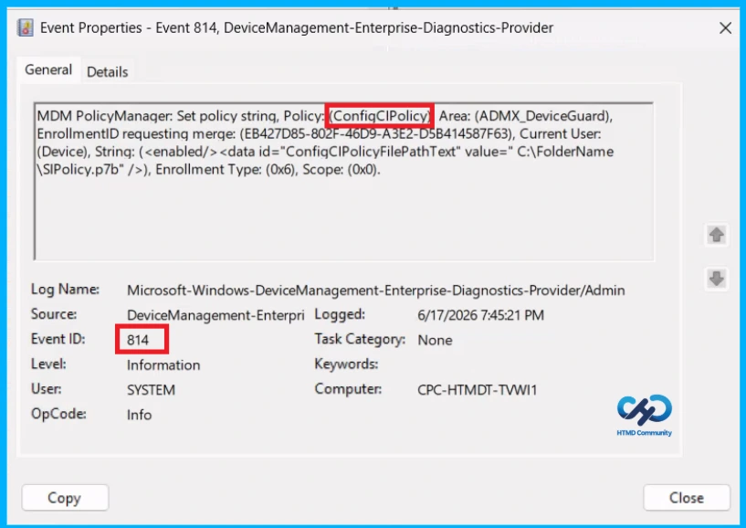
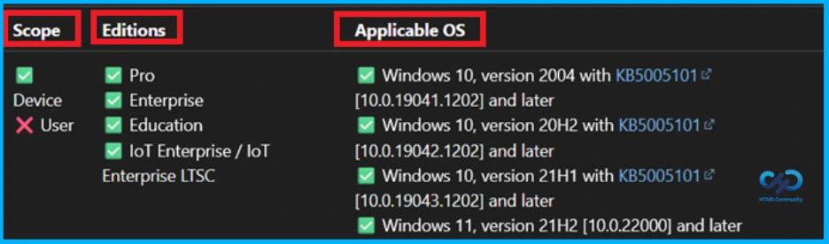
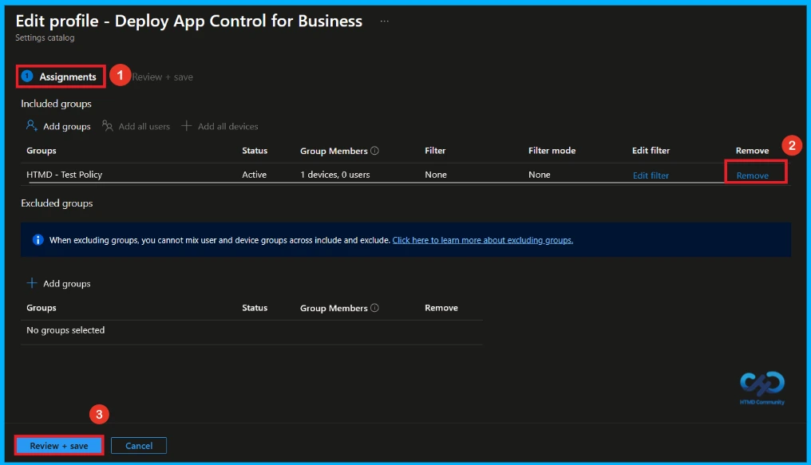
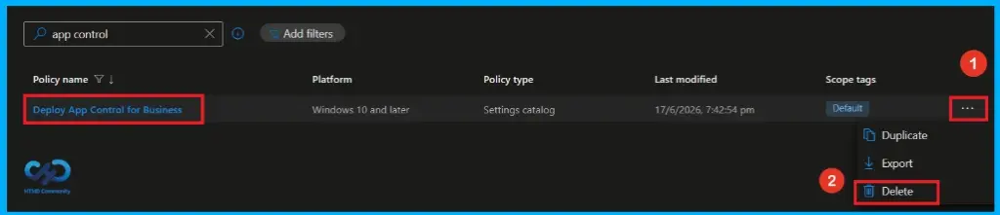

Key Takeaways
- App Control for Business helps control which applications and code are allowed to run on Windows devices.
- The policy is deployed through Intune using a Code Integrity Policy file.
- A device restart is required after enabling the policy for changes to take effect.
- Signed and protected policies require additional steps to disable or remove them completely.
Hey, let’s discuss about secure Windows devices with App Control for Business Code Integrity Policy using Intune. The Deploy App Control for Business policy lets administrators control which applications and code can run on a Windows device by deploying a Code Integrity Policy. Once enabled, Windows applies these rules to both system-level and desktop applications, and the device must be restarted for the policy to take effect. The policy file can be stored on a network share or a local drive, and the LOCAL SYSTEM account must have access to it.
Table of Contents
Secure Windows Devices with App Control for Business Code Integrity Policy using Intune
If a signed and protected policy is being used, disabling the setting alone will not remove the feature. To fully disable it, administrators must either replace it with a non-protected policy before turning the setting off or manually remove the policy from each device after disabling the setting.
How to Create a Policy in Intune
To create a new policy, first sign in to the Microsoft Intune Admin Center. Then, click Devices from the left menu and select Configuration. After that, click Create and choose New Policy to start creating a new policy.

Create a Profile
This is the next step you need to take for Policy Creation. When creating a profile, you must select the platform and profile type. Here, I would like to configure the policy for Windows 10 and later Platforms and the Settings catalog profile. Then click on the Create button.

Basic Step of Policy Creation
Enter the Name of the policy (Deploy App Control for Business) and add a brief Description, such as To deploy App Control for Business. The description is optional and can be used to describe the purpose of the policy. Click Next to continue.

Configure App Control for Business Policy
On the configuration setting, Click the + Add settings button shown in blue. After clicking it, the settings picker will open. Here, search app control on the search bar and select:
- Administrative Templates\System\Device Guard as a category
- Select to Deploy App Control for Business.
- Close the Settings Picker window.

Disable App Control for Business Policy
Once you have selected App Control for Business Policy and closed the Settings picker. You will see it on the Configuration page. Here we have only two settings: Enable or Disable. By default it will be set to Disable. If you want to Disable these settings, click on the Next button.

Enable App Control for Business Policy
To enable the Deploy App Control for Business policy, turn on the toggle switch to activate the setting in the Configuration settings page. Ensure the Code Integrity Policy file path (Device) is configured before enabling the policy. After this, proceed by clicking Next to continue the setup process.
- File path – C:\FolderName\SIPolicy.p7b

What is Scope Tag
The Scope tag section is optional and can be skipped if it is not required for your setup. It is mainly used for organizing policies and managing access, but it is not mandatory to configure. If no scope tags are needed, simply click Next to continue with the policy creation process.

Assignment Tab for Assign Group
In the Assignments tab, you choose the users or devices that will receive the policy by clicking Add Group under Include Group, select the group that you want to target (HTMD – Test Policy) and then click Next to continue.

Final Step of App Control for Business Policy Creation
In this section, you will find a summary encompassing all the information you provided in the preceding steps, including basic details, configuration settings, assignment details. We click Create to finish, and a notification confirms that the “Deploy App Control for Business created successfully”.

Device and User Check-in Status
To check whether the policy is successfully applied, sign in to the Microsoft Intune admin center and go to Devices > Configuration profiles. Select the Deploy App Control for Business policy from the list. This opens the policy overview page, where you can see a quick summary of its deployment status.

Client Side Verification
To confirm if a policy has been applied, use the Event Viewer on the client device. Go to Applications and Services Logs > Microsoft > Windows > Device Management > Enterprise Diagnostic Provider > Admin. Use the Filter Current Log option and search for Intune event 814.
MDM PolicyManager: Set policy strinq, Policy: (ConfiqCIPolicy) Area: (ADMX_DeviceGuard),
EnrollmentID requesting merge: (EB427D85-802F-46D9-A3E2-D5B414587F63), Current User:
(Device), String: (<enabled/><data id=”ConfiCIPolicyFilePathText” value=” C:\FolderName\sSIPolicy.p7b”/>), Enrollment Type: (0x6), Scope: (0x0).

Windows Configuration Service Provider (CSP)
The Policy Configuration Service Provider (CSP) is a feature used by organisations to manage and control settings on Windows 10 and 11 devices. It gives Description framework properties and ADMX mapping.
Description framework properties:
- Format –
chr(string) - Access Type – Add, Delete, Get, Replace
ADMX mapping:
| Name | Value |
|---|---|
| Name | ConfigCIPolicy |
| Friendly Name | Deploy App Control for Business |
| Location | Computer Configuration |
| Path | System > Device Guard |
| Registry Key Name | SOFTWARE\Policies\Microsoft\Windows\DeviceGuard |
| Registry Value Name | DeployConfigCIPolicy |
| ADMX File Name | DeviceGuard.admx |

How to Remove Assigned Group from App Control for Business Policy
If you want to stop the policy from applying to certain users or devices, you can remove the assigned groups. Go to Devices > Configuration profiles, select the App Control for Business policy, and open Assignments. Select the group to remove and delete it from the assignment list.
For detailed information, you can refer to our previous post – Learn How to Delete or Remove App Assignment from Intune using by Step-by-Step Guide.

How to Delete App Control for Business Policy from Intune
If the policy is no longer required, you can delete it completely from Intune. Navigate to Devices > Configuration profiles, select the App Control for Business policy, and click Delete. Deleting the policy permanently removes it from Intune and stops it from applying to all devices.
For detailed information, you can refer to our previous post – How to Delete Allow Clipboard History Policy in Intune Step by Step Guide.

Need Further Assistance or Have Technical Questions?
Join the LinkedIn Page and Telegram group to get the latest step-by-step guides and news updates. Join our Meetup Page to participate in User group meetings. Also, join the WhatsApp Community and the Whatsapp channel to get the latest news on Microsoft Technologies. We are there on Reddit as well.
Author
Anoop C Nair has been Microsoft MVP from 2015 onwards for 10 consecutive years! He is a Workplace Solution Architect with more than 22+ years of experience in Workplace technologies. He is also a Blogger, Speaker, and Local User Group Community leader. His primary focus is on Device Management technologies like SCCM and Intune. He writes about technologies like Intune, SCCM, Windows, Cloud PC, Windows, Entra, Microsoft Security, Career, etc